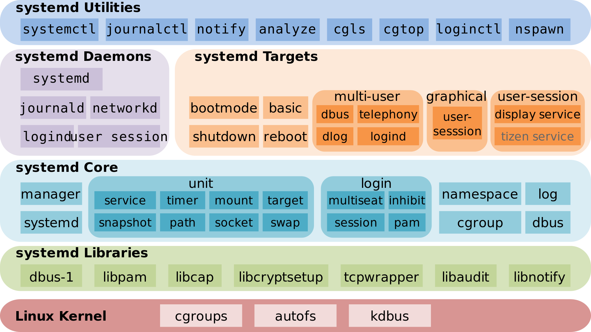
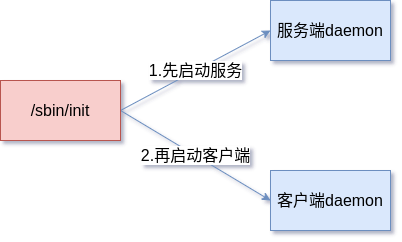
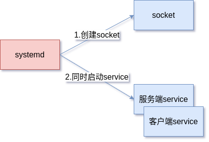

systemd
在Linux系统中有个1号（PID:1）进程，它是第一个用户空间中的进程，也称为初始化(init)进程。它有两个职责：一是执行初始化任务，它负责启动系统中的其他进程，它承担了这些进程的父进程或者祖先进程的角色；另一个职责就是进入无限等待直到系统关闭，所以也承担系统级的控制任务。
这个1号进程有3种主流（或曾经主流）的实现方式：SysV init, Upstart和systemd。在RHEL5及以前的版本中使用的SysV init，这是一种历史悠久的初始化进程，由Unix系统发展而来，也是许多有经验的程序员最熟悉的方式。在RHEL6中开始使用的Upstart，由ubuntu开发，特点是基于事件（event）机制来解决启动程序之间的依赖关系。Upstart最终昙花一现，在RHEL7中被systemd替代。systemd由Lennart Poettering开发，现已经是各大主流Linux发行版（如RHEL、Debian、Ubuntu、ArchLinux、OpenSUSE等）默认的初始化程序。
systemd的特点
相比于SysV init和Upstart，systemd具有以下突出的优点：
- 得益于并行启动和按需启动机制，systemd拥有更快的启动速度；
- 拥有丰富的工具集，提供全面的系统管理能力（例如：机器名、时间、挂载、计划任务等等）；
- 拥有手术刀般精细化的服务管理能力，能精确控制服务的运行环境和资源；
- 强大的日志管理能力，能够防止日志被篡改。
常见工具及命令
正如上面的描述，systemd拥有一个强大而丰富的工具箱，如下图所示：

先来看看一些工具的使用：
systemctl
systemctl是systemd中非常重要的工具，用于控制系统和管理服务。
基于systemctl可以实现关机重启等操作：
1 | 重启系统 |
后面会介绍在systemd中被管理的对象叫做unit。以sshd.service为例，使用systemctl可以设置sshd服务的启动停止和开机自启等。
1 | 启动sshd.service |
systemctl控制unit的能力相当于SysV init中的service和chkconfig命令的结合。
hostnamectl
该工具用于查看主机信息和设置主机名称等。
1 | 显示主机信息 |
timedatectl
查看时间和时区或设置。
1 | 查看当前时间时区以及相关设置 |
其他工具
systemd-analyze: 分析系统启动时间
1
2
3systemd-analyze
Startup finished in 4.727s (kernel) + 4.250s (initrd) + 19.860s (userspace) = 28.838s
graphical.target reached after 19.833s in userspaceloginctl: 查看登录信息；
localectl: 查看和设置本地化配置；
systemd-run: 将任何命令封装成一个systemd可以管理的对象；
systemd-nspawn和machinectl: 控制 systemd 虚拟机与容器注册管理器。
核心对象Unit
正如前面所说，systemd管理系统资源的方式是unit对象。unit又分为以下11种类型：
- service: 服务，即需要在后台运行的程序，可以启动、停止和重启等；
- socket: 支持AF_UNIX/AF_INET4/AF_INET6的socket资源，实现基于socket触发的服务；
- device: 管理/dev下的设备，可以定义设备之间的依赖关系；
- mount: 定义挂载点，可以替代/etc/fstab;
- automount: 用于控制自动挂载文件系统，相当于 SysV-init 的 autofs 服务;
- swap: 定义一个用户做虚拟内存的交换分区;
- target: 用于对 Unit 文件进行逻辑分组，引导其它 Unit 的执行。
- path: 定义基于文件路径的服务，可以基于path是否存在启动服务；
- timer: 定时触发任务，可以替代crontab计划任务；
- snapshot: 创建当前系统的运行快照，用于恢复；
- slice和scope通常不是用户创建的，用来管理系统的分组信息等。
修改unit
如果要对已经存在unit进行修改，比如修改启动参数等，使用systemctl edit httpd.service命令。
unit文件通常存储在/lib/systemd/system/目录下，但是执行systemctl edit会在/etc/systemd/system/httpd.service.d/override.conf文件中添加修改的内容。所有override.conf内容会被追加到httpd.service中。
使用systemctl edit --full会在/etc/systemd/system目录中创建一个全新的unit文件完整替换对应的unit。
创建unit
当需要自定义unit时，需要在/etc/systemd/system中创建unit文件。以sleep.service为例>
1 | sudo touch /etc/systemd/system/sleep.service |
sleep.service文件格式类似于.desktop，也类似与ini格式配置文件。
分为[Unit]、[Service]、[Install]三段。
1 | [Unit] # Unit提供service的基本信息 |
其他配置项目可以参考systemd的manual：
1 | man systemd.unit |
SysV-init使用shell语言编写启动脚本，脚本中充斥了大量的sed、awk等命令，导致系统启动过程中大量进程执行一小段时间就退出，造成了进程切换的代价。同时shell语法门槛较高，编写复杂。
systemd设计了一套基于key-value的配置文件的方式实现了服务的管理，相比于SysV-init大大降低了配置的复杂程度。
Target
Target就是一组unit，启动一个target就是启动该target包含的所有unit。
在systemd中target对应的是SysV init中的运行级别runlevel。
| Runlevel | systemd Target | 说明 |
|---|---|---|
| 0 | poweroff.target | 关闭系统 |
| 1 | rescue.target | 单用户模式 |
| 2,4 | multi-user.target | 自定义运行级别，默认同runlevel3 |
| 3 | multi-user.target | 无图形化、多用户运行级别 |
| 5 | graphical.target | 图形化多用户运行级别 |
| 6 | reboot.target | 重启 |
设置系统默认的Target：
1 | 查看默认启动target |
systemd也兼容了SysV init的开机启动脚本，在/etc/rc.d/中的init脚本也会被翻译成systemd的unit开机启动。
日志管理journalctl
systemd通过标准组件journald将服务的日志信息存储在二进制文件中，并提供了journalctl工具用于查看日志。二进制的日志文件拥有防止被篡改的特性，因此安全性很高。
journald的配置文件路径：/etc/systemd/journald.conf
下面介绍几个journalctl常用的命令：
1 | 查看所有日志（默认情况下 ，只保存本次启动的日志） |
journalctl还具备日志管理功能：
1 | 显示日志占据的硬盘空间 |
设计思想
systemd能获得主流发行版青睐一定有其它程序无法比拟的优势。根据systemd作者的介绍，这里尝试总结一下systemd的设计思想。
并行启动和按需激活
systemd作者认为SysV-init启动效率低下的原因是启动顺序串行并且启动了过多的服务。要想提高效率有两个方法：
- 启动更少的项目
- 将串行的方式改成并行
先说第二点，SysV-init的启动项是串行执行的。启动脚本存放在/etc/rc.d/rc3.d/中，例如S10network。启动脚本前的数字表示启动顺序，数字越大表示启动顺序越靠后。串行启动的好处是启动项之间的依赖关系很容易梳理，但是启动过程计算任务和IO任务也是串行执行，导致cpu或者io的效率没有最大化。
而systemd采用了并行启动。要想实现并行启动，需要解决的是daemon之间的依赖关系问题。针对传统daemon程序，它们主要等待服务准备socket。因此，只要能将socket提前建立好，daemon之间的依赖关系就解决了。在systemd中，由systemd首先创建daemon所需的socket，当依赖该socket服务启动时，socket已经建立完成所以可以继续程序中执行逻辑。而当socket上有数据到达时，systemd便会将socket文件句柄和socket上的数据转交给daemon程序的服务端。


同样的机制下，便可以实现按需启动。以sshd服务为例，对于很多设备的sshd服务只有当远程连接请求到达时才需要激活，否则大量的时间都是在无效占用资源。所以可以由systemd创建监听22端口的socket，当有真实连接请求到达时再将socket句柄和连接请求数据转移给sshd服务进行处理，这就是按需启动。
对于使用D-Bus的进程来说也是一样，Dbus实现hook机制实现第一次访问时加载服务。
对于开机过程中涉及到文件系统的任务也可以实现并行化。Linux操作系统启动过程中会执行fsck、mount等操作，耗时较长，依赖文件系统的daemon进程需要等待上述操作完成后才能启动。systemd使用autofs的方式解决了文件系统的依赖，在fs准备就绪之前会systemd挂载autofs。从需要文件系统的daemon进程来看，所需要的path已经就绪，因此可以继续运行，一旦需要读写文件，systemd在收到请求会阻塞直到真实文件就绪后再返回，因此实现了并行启动。
基于CGroup的服务管理
在Linux中使用两次fork可以让孙子进程和父进程脱离父子关系。如果服务启动了很多子进程，而子进程又启动了很多其他子进程，那么这些孙子进程就脱离了服务的控制范围。在systemd中使用了CGroup实现了服务的分组管理，将服务所有的孙子进程都加入到同一个组中进行管理，解决了该问题。
CGroup同时也是系统资源管理的基石，因此systemd利用CGroup也可以实现unit的精细化管理。